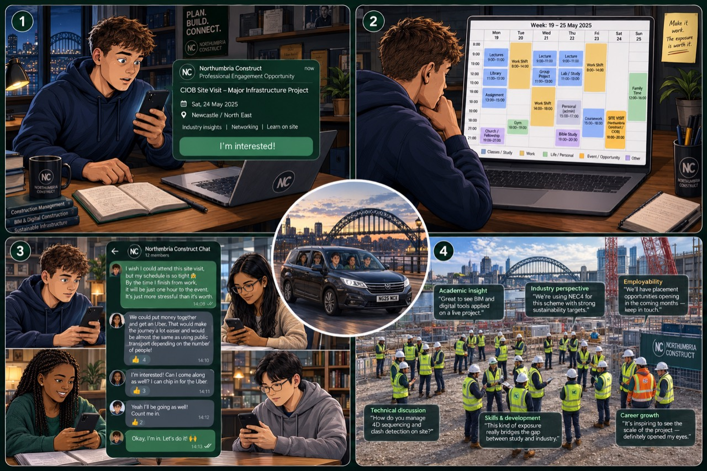

Northumbria Construct Community
A community built around
professional connection.
Northumbria Construct brings people closer to professional institutions, industry perspectives, shared learning and relevant opportunities.
The value of community · A story in two pages
What changes when information becomes shared access.
A story about moving from simply knowing that an opportunity exists to having the support and connections needed to participate.
Get involved
Find an experience. Make a connection.
Explore activities across Newcastle Hub and Ibom Hub, or discuss volunteering, professional engagement and collaboration with our community.
Join Northumbria Construct
Take the next step.
Contact us to express your interest in joining, volunteering or collaborating. We can help you find the appropriate route to participate.
Choose your hub to continue: Newcastle Hub joins through the official Students’ Union society page, while Ibom Hub connects through Contact Us. For questions about eligibility or participation, contact us; an enquiry does not complete registration.